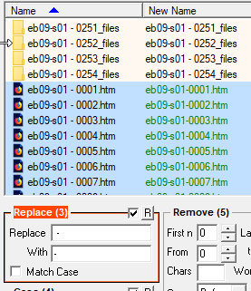

Explains how to change auto-generated filenames and delete special folders created by
AFR.
About this task
When ABBYY FineReader outputs files as HTML, it generates a
separate CSS file for each one in a unique folder. We do not need
the CSS files, but because each folder also has a virtual link to
the HTML files we want to keep, deletion requires a special
procedure. We rename the HTML files at the same time to conform
to our data organization scheme.
In BRU navigate to the appropriate
2-page-html folder.
Select the HTML files, without selecting the CSS folders.
Figure: Bulk Rename Utility

In the Replace (3) section, use the
Replace box to enter the character(s) you want to
change in the. Use the With box to enter the new
character(s). In this example, we are removing the spaces around the second
hyphen.
The new filename is previewed in green in the main window. To make the
change, select the Rename button at the
bottom-right.
Close BRU and navigate to the same folder in File Explorer.
Now you can safely delete all of the CSS folders without
disturbing the HTML files.